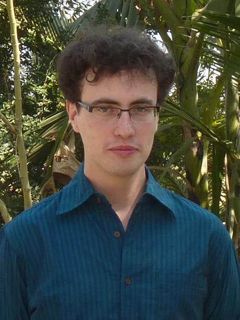

|

|
|
Hello! I am a post-doctoral researcher in Avishai Dekel's team at the
Centre for Astrophysics
and Planetary Science,
in the Racah Institute of Physics of the
Hebrew University of Jerusalem.
My research focuses on the formation and evolution of galaxies across
cosmic time, both from observational and theoretical perspectives.
Main research interests:
- Star formation across cosmic time.
- Galaxy evolution.
- Molecular gas.
- Cosmological implications of baryonic physics.
Professional address: Office 201, Kaplun building, Edmond J. Safra Campus, Racah Institute
of Physics, The Hebrew University, Jerusalem 91904, Israel
E-mail: jonathan.freundlich at mail.huji.ac.il
|